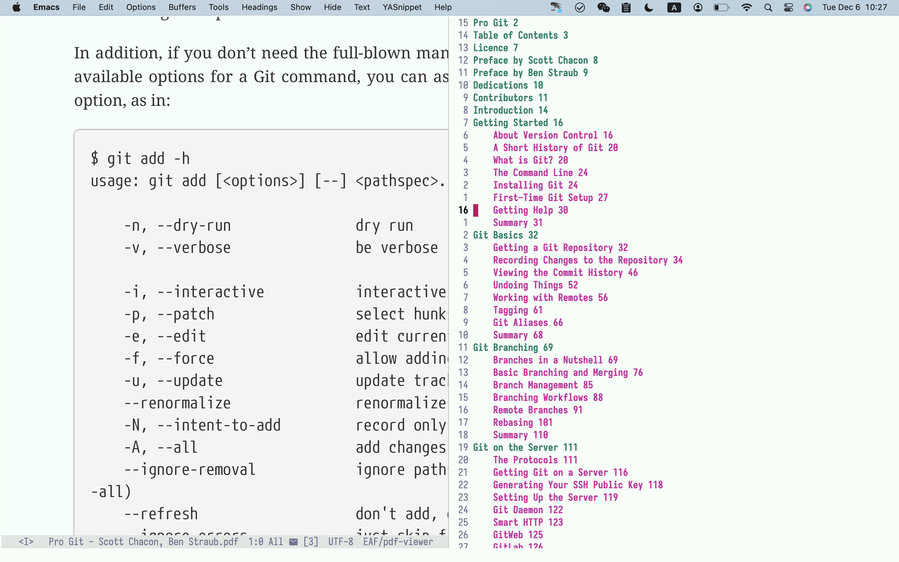

基于 Emacs 的文献阅读方法
Table of Contents
目前我己经不使用 org-roam 管理笔记，本文的内容未更新。
之前写过一篇关于使用 Emacs 进行文献管理的文章，有人询问能否写一篇详细的教程。
这篇文章就更新下我目前的关于文献管理及笔记记录的相关流程，更多的是关于术的使用，道的部份还得每个人深思。
1. Zotero
首先是文献管理的基本软件。
我曾经使用过的有 Endnote、Mendeley、Zotero、Jabref、Ebib 等等，其中Endnote 是最早使用的，但是一直都没觉得它有多么的好用，可能最早就它和 Word 结合使用的体验较好而己。Mendeley 己经很久没有使用过了，使用它的时间比 Endnote 长一些，它需要在线使用更新文献等，没有黑科技使用起来并不是很好。Jabref 的优点在于开源，以及使用 plain entry 的功能自动生成文献题录。
Zotero 的优势在于收集文献，我的基本使用流程是使用 Google scholar 跟踪最新的文献，通过邮箱订阅一周会定时收到几篇文献，打开文献阅读的时候，然后使用 zotero 保存到数据库当中。Zotero 有个插件 Better bibtex for zotero，使用该插件可以自动的更新数据库中的文献到 Reference.bib 文件，这个文件记录了所有的文献引文，该文件可以在Emacs 中调用。
2. Emacs 中文献的管理
在 Emacs 中有多个包可以进行文献的管理与阅读工作，具体的可以通过 melpa.org 这个网战查询。我目前使用的是 Ebib、Bibtex-completion、Citar、org-cite 以及 org-roam-bibtex 这几个。
Ebib 是类似 zotero 的文献管理包，可以进行文献的收索、查询、笔记的记录等工作，但是我仅用它来进行文献的过滤查找，简单的查找用使用 citar 进行。
我的配置文件见.emacs.d/init-bibtex.el at master · Jousimies/.emacs.d。
这个过程的难点在于 Emacs 的配置，配置好之后在 Emacs 中可以通过 citar 打开文献文件、引文或者文献引用等都比较简单。
3. PDF 阅读软件
我通常只保存 PDF 文件，知网上的 CAJ 文件我会通过 Tempermonkey 这个软件来下载 PDF 文件，我不喜欢 CAJ 格式文件，在 Mac 上打开非常的慢，体验很差。
在 Mac 上一个比较好用的独立于 Emacs 的 PDF 阅读器是 sioyek。如果你使用付费软件有其他可选，自己找吧。
基于 Emacs 的目前就两个选择，一个是 pdf-tools，一个是 eaf-pdf-viewer ，关于 eaf-pdf-viewer 的使用见我的另一篇文章。如果你使用 Mac 或 Linux 系统两个都可以使用，Mac 上使用 eaf-pdf-viewer 目前需要 Emacs 版本为 28.2，29及以上的版本使用存在一些问题。
如果是 Windows 系统还是使用独立于 Emacs 的 PDF 阅读器更好。

Figure 1: eaf-pdf-viewer
4. 文献阅读笔记
我在 Emacs 中使用 org-roam 进行笔记的记录，相关的内容可以见我的文章，All-in-one 笔记系统。
说一说我的基本使用流程。
我会通过 citar-open-note 开始进行文献笔记的记录，这个会自动的调用 org-roam 中设置的 template。可根据自己的需要修改模板的内容。
在生成的笔记文件当中包含了 :ID: :ROAMREFS: 这两项，通过 ID 可以使用 org-roam 提供的检索功能 org-roam-ref-find 进行文献笔记的查找，这个与 org-roam-node-find 区分普通笔记和文献笔记。
有了 ROAMREFS 这一项就可以在笔记中打开对应的 PDF 文件，我设置的是 zm 调用 orb-note-actions，回车即可。这个 orb-note-actions 还有其他的功能，我不怎么使用，感兴趣的可以自己去探索。
阅读文献的时候会进行 highlight 的标注，然后通过 pdfannot 这个第三方的程序将 highlight 抽取到文献笔记当中。（这个过程原来是通过一致的 bibtex key 进行，当前我更改了文件保存的文件名，导致这个过程目前不可用，相关代码就不放出来了。感兴趣的去我过往的文章中找找代码。）
至于具体的文献阅读的过程可以在知乎上搜索，有很多的个人经验可以参考，这里就不赘述了。
需要指出的是这只是单篇文献的阅读，还需要争对同类型的文献进行整理，需要另外建立笔记然后在其中对需要的文献进行引用({Timothy Johnson}, 2022)。
5. TODO 基于 Emacs 的 latex 文献引用
当需要投稿的时候，使用期刊提供的 Latex 模板可以很容易的引用文献，相比较于 Word 处理文献要容易的很多。
但是面临的一个问题是，zotero 管理的是所有的文献，投稿时并不需要提供所有的文献只需要提供引用的那些文献，怎么办呢？
第一种是从主 bibtex 文件中将所需的的复制出来。这个方法可行，但是显的有些笨拙。
第二种方法是使用 Emacs 中的 ebib 这个包提取所需要的文献。
首先使用 ebib-dependent-create-dependent 在你的 latex 文档处创建 Reference.bib 文件以供引用。然后通过 ebib-dependent-add-entry 将需要引用的文献加入到 Reference.bib 文件中即可。
在 Emacs 中进行 latex 的写作还是很方便的，通过 Reftex 这个包提供的 reftex-citation 就可以插入文献啦。
在 Emacs 中使用 bibtex 文件需要对此先进行编译，通常需要三步， bibtex->latex->latex 。在 Emacs 中使用 C-c C-c 进行，还是很方便的。